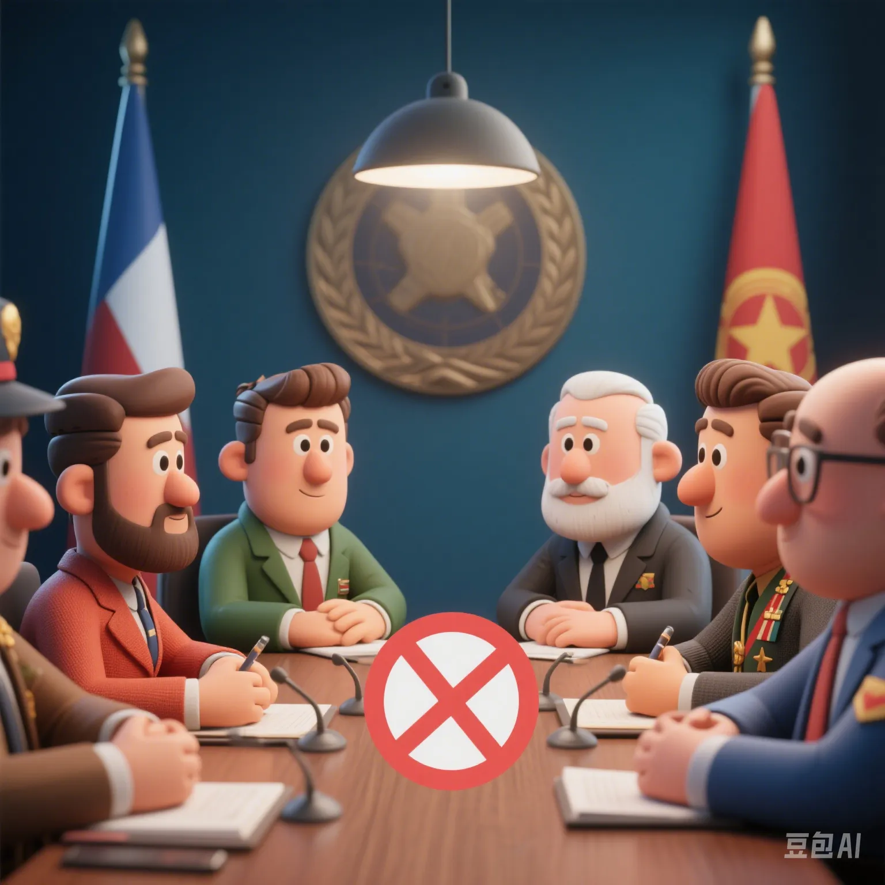

Gaza Ceasefire Negotiations at an Impasse: The Game of 'Humanitarian Corridors' Behind 110,000 Casualties
PeaceLove.Top Insights :2025-04-17
A Stalled Cease - fire Agreement
Since the outbreak of a new round of conflict in 2023, the Gaza Strip has been in a state of "humanitarian purgatory".
According to UN data, there have been over 110,000 casualties and nearly 2 million people have been displaced.
Despite mediation efforts led by multiple parties such as Egypt and Qatar, the cease - fire negotiations have been stuck in a deadlock for a long time. Israel insists on "completely disarming Hamas", while the Palestinians demand "immediate opening of humanitarian corridors" and "release of detainees" as pre - conditions for negotiations.
What Are 'Humanitarian Corridors'? Why Are They the Biggest Point of Contention? 🚑
The so - called "humanitarian corridors" refer to temporary routes for medical aid, supplies, and personnel evacuation in the midst of war. However, this seemingly warm - hearted design has actually become the core weapon in the strategic game of all parties:
- Hamas hopes to replenish food and weapons through the corridors.
- The Israeli army is worried that "corridors mean loopholes" and refuses to fully allow passage.
- The United Nations has repeatedly accused the Israeli army of blocking supply convoys, resulting in "refugee camps without water, electricity, or medicine".
Almost every breakdown in negotiations is related to this "life - saving corridor".
Is 'Diplomatic Mediation' Entering a Fatigue Period? 🕯️
- Qatar and Egypt: As the main Arab mediators, they have repeatedly proposed a dual - plan of "phased cease - fire + armed control", but it has been rejected by Israel.
- The United States: It seemingly supports Israel but secretly pressures for negotiations, with an inconsistent internal stance.
- The United Nations: It strongly condemns violent acts on the humanitarian level but has difficulty intervening in the actual military conflict.
Now, there is a popular saying in the diplomatic circle: "No one can persuade Israel except itself."
Civilians in the Conflict: Surviving Bombs and Giving Birth in the Desert
"My sister gave birth to a baby in a tent, and there wasn't even a pair of scissors to cut the umbilical cord." - A Gaza refugee mother sobbed.
Humanitarian organizations have revealed that:
- A child is injured in Gaza every 8 minutes.
- 90% of hospitals are "running out of supplies", and seriously injured patients undergo surgery without anesthesia.
- Over 1 million people are living in "uncovered open areas". The summer heat, mosquitoes, and water shortage have led to the spread of epidemics.
- In the temporary camps set up by the United Nations, even one set of toilets has to be used by thousands of people in turn...
The Struggle Beyond the War: Who Decides on Reconstruction? 🧱
Even if the war stops, **"who will rebuild Gaza"** has become the focus:
- The United States prefers "the Arab League to take the lead".
- Iran and Hamas emphasize "the necessity of retaining national self - determination rights".
- The United Nations plans to set up a "neutral supervision committee" to manage the reconstruction fund.
However, behind these political plans lies a huge economic cake and a contest for geopolitical influence.
Conclusion: Peace Is Not Just Paper on the Negotiation Table
The real question is not "whether to negotiate" but - between the real - life ruins and political calculations, who can truly fight for the future sunshine of the civilians?